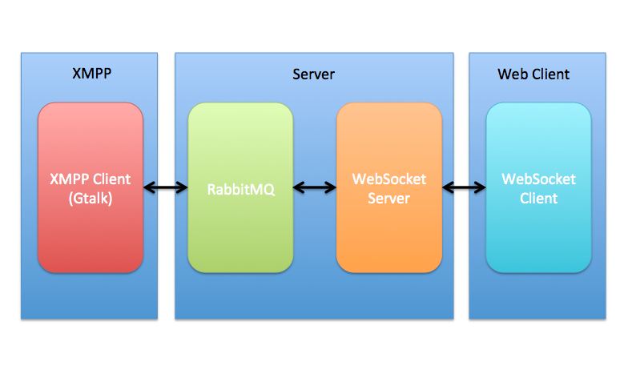

Python ve Ruby ile Gercek Zamanlı Web Uygulamaları Gelistirmek
Created by Emrah Ayanoglu / STM A.S
Konular
- Gercek Zamanlı Web Uygulamaları
- Ornek bir Startup - Olark
- Genel Mimari
- WebSocket ve web-socket-js
- WebSocket Server
- RabbitMQ ve Mesajlasma
- XMPP Protokolu
- Demo
- Sorular
Gercek Zamanlı Web Uygulamaları
Server tarafından iletilen bilginin, en hızlı şekilde(low latency) client'lara aktarıldığı uygulamalardır.
Live Chat
Multiplayer Oyunlar

Finans

Gercek Zamanlı Analitikler
Ortak Çalısma Uygulamaları

Aktivite Akımları

Ornek bir Startup
Olark
- 2009 Ağustos ayında Y-Combinator desteğiyle kuruldu
- Müşteri ile anlık Chat uygulamalarında bir yenilik gerçekleştirdi
- Kolay entegre edilebilir, herhangi bir Jabber/XMPP Client sayesinde Müşteri ile konuşulabilir.
- Ziyaretçinin gerekli her türlü bilgiye(lokasyon, web gezi bilgileri, v.b) Chat Client'tan ulaşılabilir.
Olark

Genel Mimari
WebSocket
- HTML 5 ile gelen low-latency client-server haberleşmeyi sağlar
- Ajax ve Ajax Long Polling'deki fazlalıkları atar
WebSocket API
<script type="text/javascript">
var ws = new WebSocket("ws://example.com:10081/");
ws.onopen = function() {
ws.send("Hello"); // Mesaji gonder
};
ws.onmessage = function(e) {
// Mesaj Geldi Olayi
alert(e.data);
};
ws.onclose = function() {
// Baglanti Kapandi Olayi
alert("closed");
};
</script>web-socket-js
- Alt yapı olarak Flash Socket'i ve ExternalInterface'i kullanır
- HTML 5 destekli tarayıcı bulunmadığında iyi bir seçenektir
- Tamamen WebSocket API benzeri bir API'a sahiptir
web-socket-js
<script type="text/javascript" src="swfobject.js"></script>
<script type="text/javascript" src="web_socket.js"></script>
<script type="text/javascript">
// WebSocketMain.swf'in yerini belirtiyoruz
WEB_SOCKET_SWF_LOCATION = "WebSocketMain.swf";
// WebSocket API'la ayni API oldugundan aynen kullaniyoruz
var ws = new WebSocket("ws://example.com:10081/");
ws.onopen = function() {
ws.send("Hello"); // Mesaji gonder
};
ws.onmessage = function(e) {
// Mesaj Geldi Olayi
alert(e.data);
};
ws.onclose = function() {
alert("closed");
};
</script>WebSocket Server
Gercek Zamanlı Uygulamalar için Asenkron I/O bir WebSocket Server'a ihtiyacimiz var (Low-Latency)
- Python
- Tornado
- Twisted
- Ruby
- EventMachine
Python - Tornado WebSocket Server
Friendfeed'in gucunu veren Web Server
import tornado.httpserver
import tornado.websocket
import tornado.ioloop
import tornado.web
class WSHandler(tornado.websocket.WebSocketHandler):
def open(self):
print 'yeni baglanti'
self.write_message("Hello World")
def on_message(self, message):
print 'mesaj alindi %s' % message
def on_close(self):
print 'baglanti kapandi'
application = tornado.web.Application([
(r'/ws', WSHandler),
])
if __name__ == "__main__":
http_server = tornado.httpserver.HTTPServer(application)
http_server.listen(8888)
tornado.ioloop.IOLoop.instance().start()Ruby - EventMachine WebSocket Server
require 'em-websocket'
EM.run {
EM::WebSocket.run(:host => "0.0.0.0", :port => 8080) do |ws|
ws.onopen { |handshake|
puts "WebSocket connection open"
# Mesaji client'lara yayinla
ws.send "Merhaba Client, suraya #{handshake.path} baglandin"
}
ws.onclose { puts "Baglanti Kapandi" }
ws.onmessage { |msg|
puts "Mesaj Alindi: #{msg}"
ws.send "Pong: #{msg}"
}
end
}Demo - WebSocket Server
RabbitMQ ve Mesajlasma
- Açık Kaynak Kodlu Mesaj Broker Yazılımıdır
- AMQP(Advanced Message Queuing Protocol)'u uygular
- Erlang diliyle yazılmıştır
- Pub-Sub, Routing, Topics destekler
- Kullananlar: BBC, NASA, Digg, SecondLife, Del.icio.us, Huffington Post
RabbitMQ - Clients
- Python
- Pika
- Ruby
- AMQP
Python - Pika Publisher
#!/usr/bin/env python
import pika
connection = pika.BlockingConnection(pika.ConnectionParameters(
host='localhost'))
channel = connection.channel()
channel.queue_declare(queue='jspyconftest')
channel.basic_publish(exchange='',
routing_key='jspyconftest',
body='Hello World!')
print " [x] Sent 'Hello World!'"
connection.close()Python - Pika Subscriber
#!/usr/bin/env python
import pika
connection = pika.BlockingConnection(pika.ConnectionParameters(
host='localhost'))
channel = connection.channel()
channel.queue_declare(queue='jspyconftest')
print ' [*] Mesajlar Bekleniyor. Cikmak icin CTRL+C'
def callback(ch, method, properties, body):
print " [x] Received %r" % (body,)
channel.basic_consume(callback,
queue='jspyconftest',
no_ack=True)
channel.start_consuming()Ruby - AMQP Publisher & Subscriber
require "amqp"
EventMachine.run do
connection = AMQP.connect(:host => '127.0.0.1')
puts "AMQP Broker a baglanildi."
channel = AMQP::Channel.new(connection)
queue = channel.queue("jspyconftest", :auto_delete => true)
exchange = channel.direct("")
queue.subscribe do |payload|
puts "Mesaj Alindi: #{payload}. Disconnecting..."
connection.close { EventMachine.stop }
end
exchange.publish "Hello, world!", :routing_key => queue.name
endRuby AMQP - Birden - Çoka Aktarım
require "amqp"
AMQP.start("amqp://dev.rabbitmq.com:5672") do |connection|
channel = AMQP::Channel.new(connection)
exchange = channel.fanout("nba.scores")
channel.queue("joe", :auto_delete => true).bind(exchange).subscribe do |payload|
puts "#{payload} => joe"
end
channel.queue("aaron", :auto_delete => true).bind(exchange).subscribe do |payload|
puts "#{payload} => aaron"
end
channel.queue("bob", :auto_delete => true).bind(exchange).subscribe do |payload|
puts "#{payload} => bob"
end
exchange.publish("BOS 101, NYK 89").publish("ORL 85, ALT 88")
# disconnect & exit after 2 seconds
EventMachine.add_timer(2) do
exchange.delete
connection.close { EventMachine.stop }
end
endDemo
XMPP Protokolü
- XMPP(Extendable Messaging and Presence Protocol) XML mesaj tabanlı uygulamalar için haberleşme protokolüdür
- Jabber adıyla da bilinir. (Gtalk, Facebook Chat, Gabber, v.b)
- Genişletilebilir olmasından dolayı VoIP, Video, File Transferi, Multiplayer Oyun gibi alanlarda oldukça kullanışlıdır
- Protokolün detayları için: XMPP Foundation
XMPP - Mimari
XMPP - Clients
- Python
- SleekXMPP
- Ruby
- XMPP4R
Python - SleekXMPP
import sys
import sleekxmpp
def main():
bot = EchoBot("jspyconftest@ufuks-macbook-pro.local", "12345")
bot.run()
class EchoBot:
def __init__(self, jid, password) :
self.xmpp = sleekxmpp.ClientXMPP(jid, password)
self.xmpp.add_event_handler("session_start", self.handleXMPPConnected)
self.xmpp.add_event_handler("message", self.handleIncomingMessage)
def run(self):
self.xmpp.connect()
self.xmpp.process(threaded=False)
def handleXMPPConnected(self, event):
print "Baglandi"
self.xmpp.sendPresence(pstatus = "Send me a message")
self.xmpp.sendMessage("jspyconftest@ufuks-macbook-pro.local","Hello World")
def handleIncomingMessage(self, message):
self.xmpp.sendMessage(message["from"], message["body"])
if __name__ == "__main__" :
main()Ruby - XMPP4R
require 'rubygems'
require 'xmpp4r/client'
# Hash yardimiyla ufak bir sozluk olusturuyoruz
hash = {}
hash['ruby'] = 'Greatest little object oriented scripting language'
hash['xmpp4r'] = 'Simple XMPP library for ruby'
hash['xmpp'] = 'Extensible Messaging and Presence Protocol'
# XMPP Server baglan ve kullanici adi ve sifreyi dogrula
jid = Jabber::JID::new('jspyconftest@ufuks-macbook-pro.local')
cl = Jabber::Client::new(jid)
cl.connect
cl.auth('12345')
# Baglandigini ve online oldugunu bildir
cl.send Jabber::Presence::new
# Belirtilen Client'a mesaj yolla
salutation = Jabber::Message::new( 'jspyconftest@ufuks-macbook-pro.local', 'DictBot ready' )
salutation.set_type(:chat).set_id('1')
cl.send salutation
# Mesaj callback olusturarak gelen mesajlari kontrol et
cl.add_message_callback do |inmsg|
resp = hash[inmsg.body]
if resp == nil
resp = "don't know about " + inmsg.body
end
# Cevabini yolla
outmsg = Jabber::Message::new( inmsg.from, resp )
outmsg.set_type(:chat).set_id('1')
cl.send outmsg
end
while 1
endOlark Clone Demo
Sonuç
- Gerçek Zamanlı Web Uygulamaları Artık Her Yerde!
- WebSocket Server: Python Tornado, Ruby EventMachine
- Message Queue: RabbitMQ, Python Pika, Ruby AMQP
- XMPP Protokolü: Python SleekXMPP, Ruby XMPP4R
Sorular!
Tesekkürler :)
THE END
BY Emrah Ayanoglu
Twitter: @emrahayanoglu
Github: emrahayanoglu